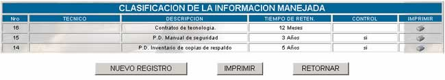
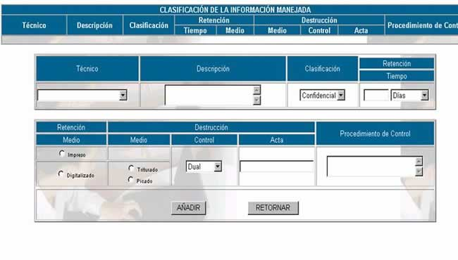

CLASIFICACIÓN DE LA INFORMACIÓN MANEJADA
La información que maneja el Jefe de la
Unidad de Sistemas es altamente sensible, por eso debe estar en custodia y
debidamente clasificada. Para este propósito es que se realiza la clasificación
de la información que le presenta la siguiente pantalla principal:

Donde:
Nro; se
refiere al número de clasificación de información asignada automáticamente por
el sistema.
Técnico; se refiere al nombre del custodio de la información.
Tiempo de retención; se refiere al número de días, semanas, meses o años
especificados al momento de recibir la información para custodiarla.
Control; se refiere a la descripción del procedimiento de
control que se llevará para la custodia de la información
Imprimir; genera un reporte para impresión de la información
correspondiente.
Nuevo registro; presenta la siguiente pantalla, en la cual se deben
llenar los campos correspondientes.

Técnico; se registra el nombre del técnico custodio encargado
de clasificar la información que llega.
Descripción; se registra una descripción completa de la
información que llega para ser clasificada.
Clasificación; el custodio debe clasificar la información que llega
en Confidencial, Reservada, Interna o Pública., de acuerdo con la PSI.
Tiempo; es el
tiempo de retención que permanece la información en custodio, esta puede ser
expresada en días, semanas o meses
Retención Medio; se
especifica el medio en el cual se retendrá la información, este puede ser
impreso o digitalizado.
Destrucción Medio; se especifica el medio de destrucción de la
información custodiada. Esto dependerá del medio utilizado para la retención,
si es físico podrá ser picado, si es digitalizado magnético, podrá ser
triturado.
Control; este campo se registrará como dual si es necesario 2
personas para la destrucción de la información, si basta una sola persona se
marcará en Personal
Acta; este campo se llena si es necesario la elaboración
de un acta de destrucción y se deberá hacer referencia al documento elaborado.
Procedimiento de control;
en este campo se llenarán los aspectos correspondiente al control independiente
de la información custodiada.
Imprimir; haciendo click en el botón
IMPRIMIR, se obtiene un reporte de toda
la lista de información.